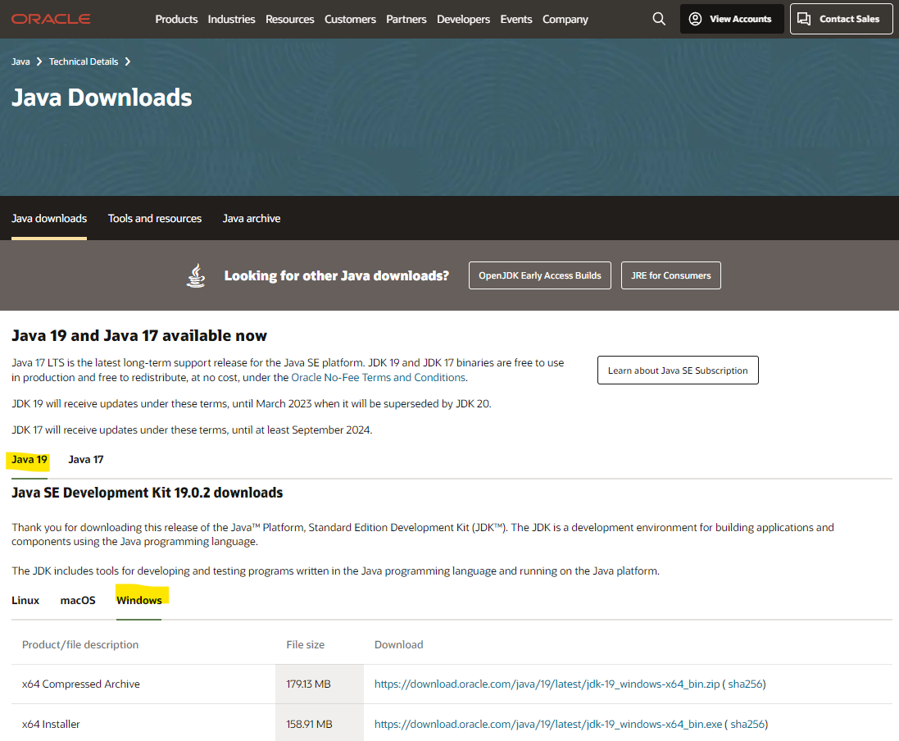
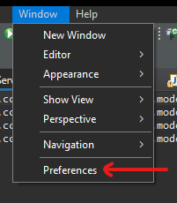
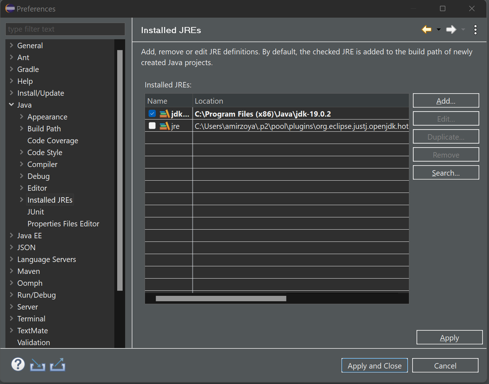
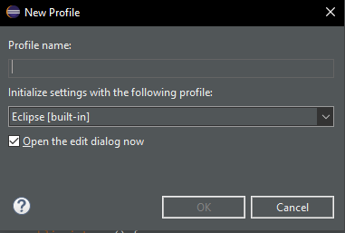
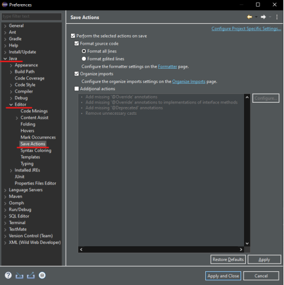
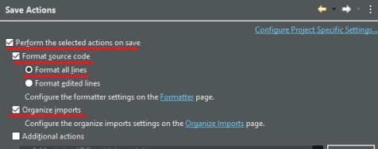
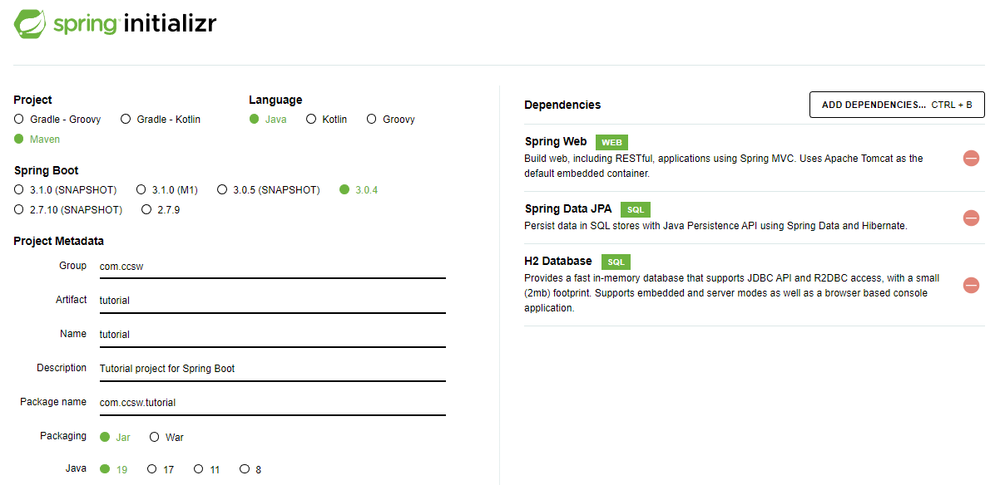

Entorno de desarrollo - Spring Boot
Instalación de herramientas
Las herramientas básicas que vamos a utilizar para esta tecnología son:
- Eclide IDE
- Maven (viene por defecto con Eclipse IDE)
- Java 19
- Postman
Instalación de IDE - Eclipse
Necesitamos instalar un IDE de desarrollo, en nuestro caso será Eclipse IDE y la máquina virtual de java necesaria para ejecutar el código. Recomendamos Java 19, que es la versión con la que está desarrollado y probado el tutorial.
Para instalar el IDE deberás acceder a Eclide IDE y descargarte la última versión del instalador. Una vez lo ejecutes te pedirá el tipo de instalación que deseas instalar. Por lo general con la de "Eclipse IDE for Java Developers" es suficiente. Con esta versión ya tiene integrado los plugins de Maven y Git.
Una vez instalado eclipse, debes asegurarte que está usando por defecto la versión de Java 19 y para ello deberás instalarla. Descárgala del siguiente enlace. Es posible que te pida un registro de correo, utiliza el email que quieras. Revisa bien el enlace para buscar y descargar la versión 19 para Windows:

Ya solo queda añadir Java al Eclipse. Para ello, abre el menú Window -> Preferences:

y dentro de la sección Java - Installed JREs añade la versión que acabas de descargar, buscando el directorio home de la instalación de Java. Además, la debes marcar como default.

Configuración de IDE - Eclipse
Como complemento al Eclipse, con el fin de crear código homogéneo y mantenible, vamos a configurar el formateador de código automático.
Para ello de nuevo abrimos el menú Window -> Preferences, nos vamos a la sección Formatter de Java:

Aquí crearemos un nuevo perfil heredando la configuración por defecto.

En el nuevo perfil configuramos que se use espacios en vez de tabuladores con sangrado de 4 caracteres.

Una vez cofigurado el nuevo formateador debemos activar que se aplique en el guardado. Para ello volvemos acceder a las preferencias de Eclipse y nos dirigimos a la sub sección Save Actions del la sección Editor nuevamente de Java.

Aquí aplicamos la configuración deseada.

Herramientas para pruebas
Para poder probar las operaciones de negocio que vamos a crear, lo mejor es utilizar una herramienta que permita realizar llamadas a API Rest. Para ello te propongo utilizar Postman, en su versión web o en su versión desktop, cualquiera de las dos sirve.
Con esta herramienta se puede generar peticiones GET, POST, PUT, DELETE contra el servidor y pasarle parámetros de forma muy sencilla y visual. Lo usaremos durante el tutorial.
Creación de proyecto
La mayoría de los proyectos SpringBoot en los que trabajamos normalmente, suelen ser proyectos web sencillos con pocas dependencias de terceros o incluso proyectos basados en micro-servicios que ejecutan pocas acciones. Ahora tienes que preparar el proyecto SpringBoot,
Crear con Initilizr
Vamos a ver como configurar paso a paso un proyecto de cero, con las librerías que vamos a utilizar en el tutorial.
¿Como usarlo?
Spring ha creado una página interactiva que permite crear y configurar proyectos en diferentes lenguajes, con diferentes versiones de Spring Boot y añadiéndole los módulos que nosotros queramos.
Esta página está disponible desde Spring Initializr. Para seguir el ejemplo del tutorial, entraremos en la web y seleccionaremos los siguientes datos:
- Tipo de proyecto: Maven
- Lenguage: Java
- Versión Spring boot: 3.0.4
- Group: com.ccsw
- ArtifactId: tutorial
- Versión Java: 19
- Dependencias: Spring Web, Spring Data JPA, H2 Database

Esto nos generará un proyecto que ya vendrá configurado con Spring Web, JPA y H2 para crear una BBDD en memoria de ejemplo con la que trabajaremos durante el tutorial
Importar en eclipse
El siguiente paso, es descomprimir el proyecto generado e importarlo como proyecto Maven. Abrimos el eclipse, pulsamos en File → Import y seleccionamos Existing Maven Projects. Buscamos el proyecto y le damos a importar.
Configurar las dependencias
Lo primero que vamos a hacer es añadir las dependencias a algunas librerías que vamos a utilizar. Abriremos el fichero pom.xml que nos ha generado el Spring Initilizr y añadiremos las siguientes líneas:
<?xml version="1.0" encoding="UTF-8"?>
<project xmlns="http://maven.apache.org/POM/4.0.0" xmlns:xsi="http://www.w3.org/2001/XMLSchema-instance"
xsi:schemaLocation="http://maven.apache.org/POM/4.0.0 https://maven.apache.org/xsd/maven-4.0.0.xsd">
<modelVersion>4.0.0</modelVersion>
<parent>
<groupId>org.springframework.boot</groupId>
<artifactId>spring-boot-starter-parent</artifactId>
<version>3.0.4</version>
<relativePath/> <!-- lookup parent from repository -->
</parent>
<groupId>com.ccsw</groupId>
<artifactId>tutorial</artifactId>
<version>0.0.1-SNAPSHOT</version>
<name>tutorial</name>
<description>Tutorial project for Spring Boot</description>
<properties>
<java.version>19</java.version>
</properties>
<dependencies>
<dependency>
<groupId>org.springframework.boot</groupId>
<artifactId>spring-boot-starter-data-jpa</artifactId>
</dependency>
<dependency>
<groupId>org.springframework.boot</groupId>
<artifactId>spring-boot-starter-web</artifactId>
</dependency>
<dependency>
<groupId>org.springdoc</groupId>
<artifactId>springdoc-openapi-starter-webmvc-ui</artifactId>
<version>2.0.3</version>
</dependency>
<dependency>
<groupId>org.hibernate</groupId>
<artifactId>hibernate-validator</artifactId>
<version>8.0.0.Final</version>
</dependency>
<dependency>
<groupId>net.sf.dozer</groupId>
<artifactId>dozer</artifactId>
<version>5.5.1</version>
</dependency>
<dependency>
<groupId>com.h2database</groupId>
<artifactId>h2</artifactId>
<scope>runtime</scope>
</dependency>
<dependency>
<groupId>org.springframework.boot</groupId>
<artifactId>spring-boot-starter-test</artifactId>
<scope>test</scope>
</dependency>
</dependencies>
<build>
<plugins>
<plugin>
<groupId>org.springframework.boot</groupId>
<artifactId>spring-boot-maven-plugin</artifactId>
</plugin>
</plugins>
</build>
</project>
Hemos añadido las dependencias de que nos permite utilizar Open API para documentar nuestras APIs. Además de esa dependencia, hemos añadido una utilidad para hacer mapeos entre objetos y para configurar los servicios Rest.
Configurar librerías
El siguiente punto es crear las clases de configuración para las librerías que hemos añadido. Para ello vamos a crear un package de configuración general de la aplicación com.ccsw.tutorial.config donde crearemos la clase para crear el bean de Dozer.
package com.ccsw.tutorial.config;
import org.dozer.DozerBeanMapper;
import org.springframework.context.annotation.Bean;
import org.springframework.context.annotation.Configuration;
/**
* @author ccsw
*
*/
@Configuration
public class BeanDozerConfig {
@Bean
public DozerBeanMapper getDozerBeanMapper() {
return new DozerBeanMapper();
}
}
Listo, ya podemos empezar a desarrollar nuestros servicios.
Configurar la BBDD
Por último, vamos a dejar configurada la BBDD en memoria. Para ello crearemos un fichero, de momento en blanco, dentro de src/main/resources/:
- data.sql → Será el fichero que utilizaremos para rellenar con datos iniciales el esquema de BBDD
Este fichero no puede estar vacío, ya que si no dará un error al arrancar. Puedes añadirle la siguiente query (que no hace nada) para que pueda arrancar el proyecto.
select 1 from dual;
Y ahora le vamos a decir a Spring Boot que la BBDD será en memoria, que use un motor de H2 y que la cree automáticamente desde el modelo y que utilice el fichero data.sql (por defecto) para cargar datos en esta. Para ello hay que configurar el fichero application.properties que está dentro de src/main/resources/:
#Database
spring.datasource.url=jdbc:h2:mem:testdb
spring.datasource.username=sa
spring.datasource.password=sa
spring.datasource.driver-class-name=org.h2.Driver
spring.jpa.database-platform=org.hibernate.dialect.H2Dialect
spring.jpa.defer-datasource-initialization=true
spring.jpa.show-sql=true
spring.h2.console.enabled=true
Arrancar el proyecto
Por último ya solo nos queda arrancar el proyecto creado. Para ello buscaremos la clase TutorialApplication.java (o la clase principal del proyecto) y con el botón derecho seleccionaremos Run As → Java Application. La aplicación al estar basada en Spring Boot arrancará internamente un Tomcat embebido donde se despliega el proyecto. Si habéis seguido el tutorial la aplicación estará disponible en http://localhost:8080, aunque de momento aún no tenemos nada accesible.